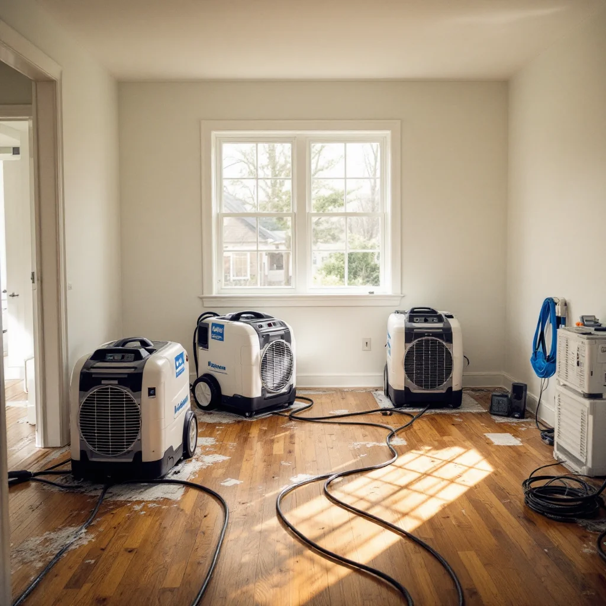

Water Damage Restoration — Stop the Clock Before Mold Starts
Water damage and mold are directly connected. Mold growth begins within 24–48 hours of a water event. How you respond in the first hours after a leak, flood, or appliance failure determines whether you're dealing with a straightforward drying job or a full remediation project six weeks later.

When You Need Water Damage Response
Call us immediately — not tomorrow — after any of these events:
- Burst or leaking pipes, especially inside walls or under slabs
- Appliance failures — water heater, washing machine, dishwasher, refrigerator ice maker
- Basement flooding from snowmelt, rain events, or drainage failure
- Roof leaks that got into attic framing or wall cavities
- Sewage backup or overflow
- Any water intrusion that wasn't professionally dried within 24–48 hours
The longer water sits in structural materials, the deeper it penetrates and the more expensive the final project. Waiting 24 hours in a warm finished basement can turn a $1,500 job into a $4,000 job.
How Water Damage Restoration Works
- Rapid Response: We respond same-day for active water damage events — call and we'll confirm availability within the hour.
- Water Extraction: Standing water is removed with commercial extraction equipment. This step protects subfloor and structural materials from prolonged saturation.
- Moisture Mapping: Calibrated meters identify all areas with elevated moisture — not just visibly wet surfaces. Water in wall cavities and under flooring is found and documented before drying begins.
- Structural Drying: Industrial dehumidifiers and air movers are placed based on the moisture map, not guesswork. We dry to target moisture levels, not just until things "feel dry."
- Mold Assessment: On any job where water sat for more than 24–48 hours, we assess for mold growth and advise on whether remediation is needed alongside drying.
- Drying Verification: Final moisture readings confirm all structural materials are back to acceptable levels before we sign off. Rebuilding over wet materials restarts the mold cycle.
What Every Water Damage Job Includes
- Same-day response for active water events
- Standing water extraction
- Comprehensive moisture mapping
- Structural drying to verified target levels
- Mold assessment included in every water damage job
- Full photo and moisture documentation for insurance claims
- Written clearance when drying is complete
What Does Water Damage Restoration Cost?
- Localized water event (single area): $500–$2,000 for extraction and drying
- Mid-size (one room or basement section): $1,500–$4,000
- Extensive flooding or multi-area: $3,000–$8,000+
Many water damage events are covered by homeowners insurance. We document cause, scope, and moisture readings to support your claim from the first visit.
What should I do right now after water damage?
Stop the source if you can. Remove standing water with towels or a wet-dry vac. Call us. Don't run household fans aimed at wet walls — if mold has already started, that spreads spores. Don't use HVAC to dry the space — that circulates moisture and potential spores throughout the home.
What if we already tried to dry it ourselves?
A moisture inspection after DIY drying is the only way to confirm it actually worked. We frequently find active mold colonies in areas homeowners dried themselves — surface dryness doesn't mean structural dryness. If more than 24–48 hours passed, a post-drying inspection is worth the call.
Active Water Damage? Call Now.
Same-day response for water damage events. Every hour counts — we answer or call back within 1 hour.
(719) 496-8287Request Same-Day Response